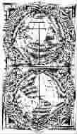

在地上画个圈
●冰 焰
在地上画个圈，让你待在里面。你可能不明白，我这么做是在干什么。
不明白很正常，因为大多数人都没这样做过，在地上画个圈，让人在里面待着，无论外面发生什么都不让人出去。
这圈给你画在山腰，还是傍晚。在圈里，你能清晰地看到夕阳在山顶洒下的余晖，红艳艳地镶在树间。你可能会想，这夕阳落地会是什么样子，会有多美，自己真想去看看。可这是不行的，你得待在我给你画的圈里，恪守你的承诺，不能出去，不能去看夕阳落下的样子。
你可以说这简直就是精神上的谋杀，如此美丽的夕阳就在眼前，却不让人看。对你现在的言论我不会发表意见，只要你在圈里老老实实待着，就够了。
风来了，身边的马尾松沙沙作响，还不时有松毛轻轻落到你头上。别急，千万别急，你知道现在要去山顶或别的什么地方你就能看到松涛，在好几年前你就想看松涛了。可你现在正在圈里，是看不到松涛的。太过分了，你可以这样说，你甚至可以骂我，可你就是不能出去，不能离开这个圈。
你说你要崩溃了。没办法，我们说好的，你得在圈里待着。
有琴声，风梢来了优雅而轻婉的琴声。这山里怎么会有如此动人的琴声呢？准是哪位忧郁的少女在诉说着什么。你想去瞧瞧，可这圈子太小了，连看她一眼都没机会。你恨我，恨不得将我一口一口吃掉，可我在圈外，你在圈里，你碰不到我。你可以出来，完全可以，但代价是违背你的诺言。
算了，还是把一切告诉你吧。你不是第一次来这座山了，可你没看到夕阳，也没听见风声，更别说松涛了。今天是因为这圈子，你身子动不了才会注意这些。至于那琴声，可记得我们一起去过的农家小店，那练琴的女孩，你当时说她弹得不好。
时间到了，你可以出来了。只是，你逃得出现实的桎梏，跑得出心里的圈子吗？
(金红摘自《青年心理》2006年第11期)